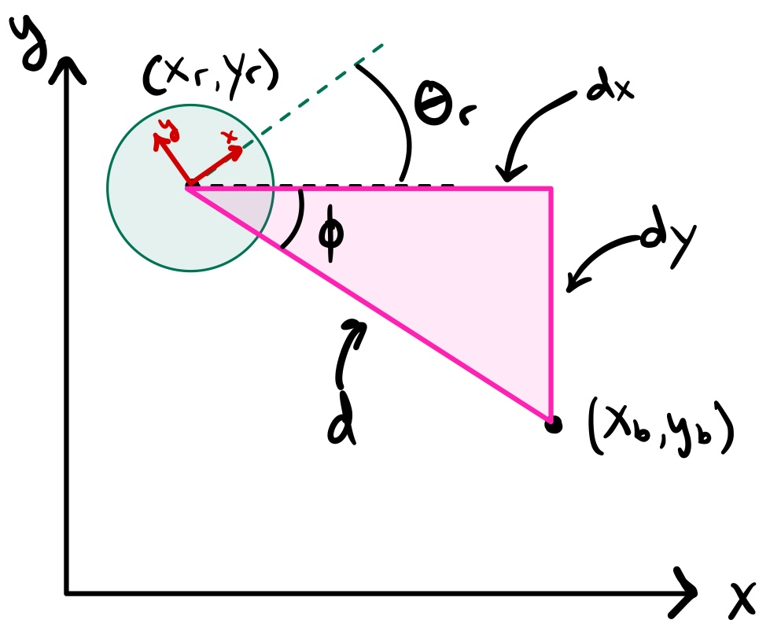
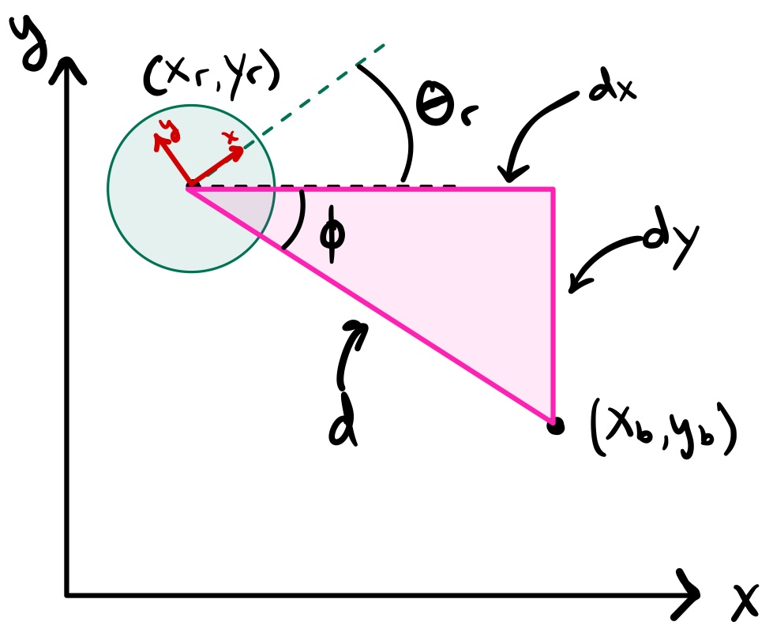
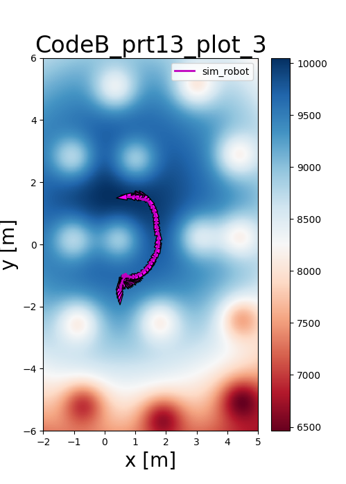
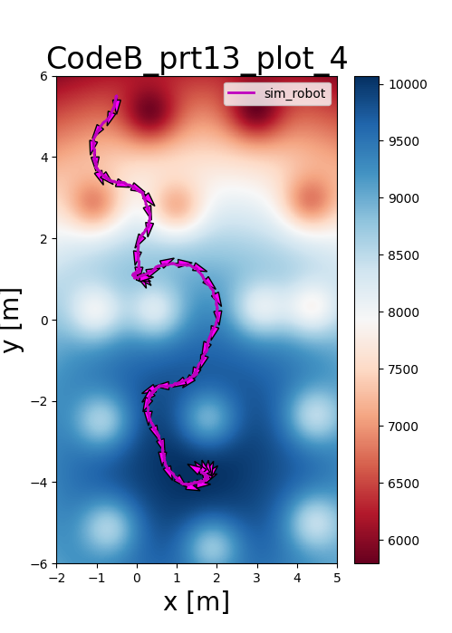
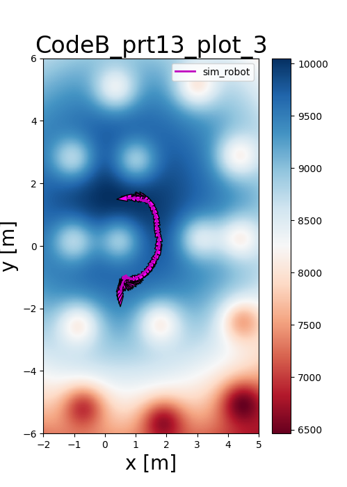
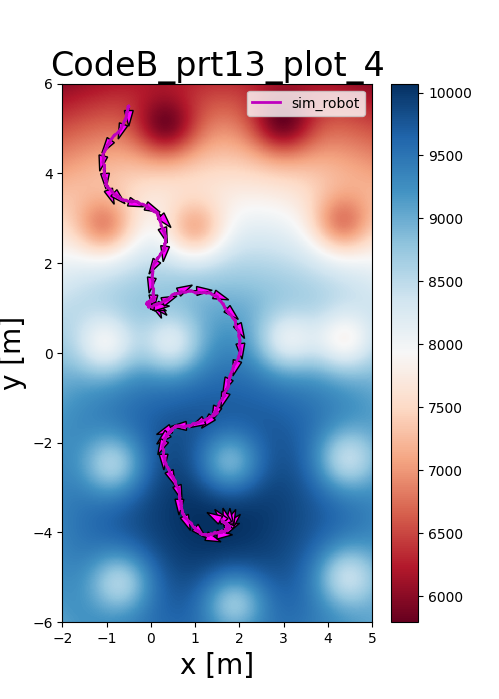

A* Path Planning and Navigation for Mobile Robotics
Skills: A* Search Algorithm, Occupancy Grids, Path Planning, Differential Drive Control, Python, Robot Simulation, Heuristic Optimization
Project Overview
This project focuses on the implementation of the A* algorithm to generate optimal 2-D paths for a differential-drive robot. The robot navigates through a discretized environment represented by occupancy grids, avoiding obstacles while moving from start to goal locations.
Beyond static path planning, the project explores Online A*, where the robot plans without prior knowledge of all obstacles, and a low-level Bang-Bang Controller to drive the generated waypoints under simulated noise.
 

Environment: Occupancy Grids
To utilize discrete search algorithms in a continuous world, the environment is discretized into occupancy grids. Two resolutions were tested: a standard 1.0m grid and a high-resolution 0.1m grid.
- Discretization: Each cell represents the binary state of being occupied or free.
- Obstacle Inflation: In high-resolution grids, obstacles were inflated to ensure the robot maintains a safe distance.

The A* Algorithm
The A* algorithm uses an evaluation function \(f(n) = g(n) + h(n)\) to find the cost-optimal path. I utilized Euclidean distance as an admissible heuristic, ensuring the algorithm never overestimates the cost to the goal.
\[ \begin{aligned} g(n) &= \text{cost to reach node } n \\ h(n) &= \sqrt{(x_{goal} - x_n)^2 + (y_{goal} - y_n)^2} \end{aligned} \]
Offline vs. Online: The offline version prunes unnecessary nodes after reaching the goal. The online version assumes the robot only senses adjacent obstacles, requiring real-time path adjustments as it moves through the environment.
Motion Control
The low-level controller implements a state machine using bang-bang control for linear and rotational motion. The robot first rotates to minimize heading error before moving forward to the target waypoint.
\[ \text{heading error} = \operatorname{atan2}(y_{goal} - y, x_{goal} - x) - \theta \]
To simulate real-world conditions, random noise was applied to the robot's configuration [x, y, θ], forcing the controller to constantly compensate for drift and sensor uncertainty.
To avod obstacle collission, my offline A* implementation filters paths between cells such that they do not clip the edges of obstacles.
Alternative: Potential Fields
As an alternative to discrete grids, I implemented Potential Fields to navigate in continuous space. The goal is modeled as a 3D Gaussian distribution with positive amplitude, while obstacles act as negative peaks, creating a "force" that guides the robot.
 



Reflections
This project highlighted the critical trade-offs between grid resolution and computational cost. While high-resolution grids offer more precision, they require robust inflation layers and precise control to prevent the robot from colliding with obstacles during noisy execution.